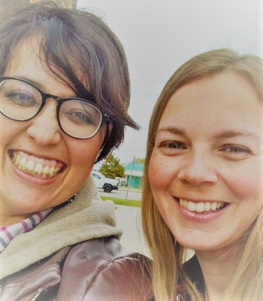

STORY: A series of fortunate events
The Mermaid side
You know that feeling of having your universe crumble before you eyes?
Probably not, and if that’s the case, standing ovation to you, slow clap and all that. And I don’t wish that
you
get acquainted with the feeling, I was just trying to get you to relate, after all that’s what good writers
do,
right?
That is just how I was feeling after my divorce. It was the end of the world as I knew it.
But the universe had a big surprise for me, the stars aligned perfectly and a rainbow infused space unicorn
came
ellegantly prancing into my life.
How? you may ask.
Couple years after my divorce, or maybe 1. I’m not sure, I decided to broaden my horizons, and I joined an LDS Mid-Singles Facebook group (and yes, I can say LDS because that’s what it was called back then). I quickly began joking around, as always commenting nonsense where I shouldn’t, then this blonde girl joined.
This new girl represented the end to my reign of comedy, not only was she more clever. But also guys started to notice her looks and her witts, I must admit that I was a tad annoyed by this Michelle girl, then we became Facebook friends and I started to realize how much we had in common. As the weeks passed, we became great friends, I don’t even remember how we got in the habit of PMing each other, but we started “writing” all sorts of parodies, and other funny stuff. Michelle became the Amy Poehler to my Tina Fey.
This whole thing started with a meme about having our convos in public to share our hilarious with the world, cause honestly, if we laugh at our stuff, I’m sure other people can laugh too, and we both love making people laugh, yes humor is a defense mechanism sometimes, but it is also something we both enjoy so much that we want to share it with our fellow human beings.
We are so fetch!:- UHF & all things Weird Al, are hilarious.
- We love all the men from Jane Austen books, except for Mr. Collins.
- Even though the unicorn is Team Wenworth, and the mermaid is 100% Team Brandon, our friendship still stands.
- Kimmy Schmidt is the one to blame for our giggling every time we hear the star spangled banner.
- We love to work on our night cheese.
- We bless the rains down in Africa.
- Can we BE anymore adorable?
- We are big fans of delicious flavor.
- We follow Jeffster on tour.
- We interned at Vance Refrigeration.
- We are big enough to admit we are often inspired by ourselves.
- Copper Boom!
- We'll do it, but just for the attention.